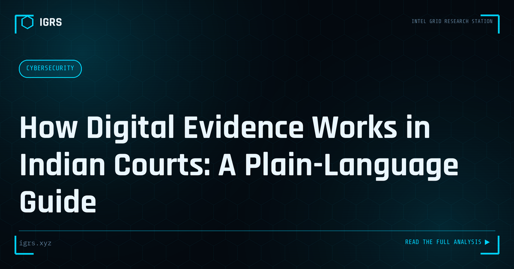

How Digital Evidence Works in Indian Courts: A Plain-Language Guide
| File No. | OD-008/2026 |
| Subject | Admissibility framework for electronic records under Indian law (BSA 2023) |
| Category | Law & Evidence |
| Author | Manuj Kumar Pandey |
| Published | 2026-05-26 |
| Reading time | 12 minutes |
Screenshots, chats, CCTV and call records decide cases every day — but only if they are legally admissible. How Indian law treats electronic evidence, explained without jargon.
Digital Evidence in Indian Courts
Digital evidence — emails, messages, files, logs, and electronic records — is central to modern litigation and prosecution. But for this evidence to be useful, it must be admissible, which in India requires compliance with specific legal requirements. For investigators, lawyers, and security professionals, understanding how digital evidence is treated in Indian courts is essential to ensuring that hard-won evidence actually counts. This guide explains the framework.
The Admissibility Requirement
Not all evidence collected is admissible in court. For digital evidence, admissibility depends on meeting legal requirements designed to ensure the evidence is authentic and reliable. Evidence that is collected improperly, lacks required certification, or whose integrity cannot be demonstrated may be excluded — meaning even compelling evidence becomes useless if procedural requirements are not met. Understanding and meeting these requirements is therefore as important as collecting the evidence itself.
Section 63 BSA: The Key Provision
| Requirement | Detail |
|---|---|
| Certificate required | Electronic records need certification |
| Authenticity | Demonstrate evidence is genuine |
| Integrity | Show evidence is unaltered |
| Chain of custody | Document handling throughout |
Section 63 of the Bharatiya Sakshya Adhiniyam (corresponding to the former Section 65B of the Evidence Act) governs the admissibility of electronic records, requiring a certificate that establishes the conditions under which the record was produced.
The Electronic Evidence Certificate
Central to admissibility is the certificate under Section 63 BSA. This certificate accompanies electronic evidence and attests to how it was produced and that the conditions for reliability were met. Without proper certification, electronic evidence risks being inadmissible regardless of its content. Investigators and those presenting digital evidence must ensure this certificate is properly prepared, as its absence has been a recurring cause of evidence being rejected by Indian courts.
Chain of Custody
Demonstrating that evidence has not been tampered with requires documenting its chain of custody — a record of who handled the evidence, when, and how, from collection to presentation. An unbroken, well-documented chain of custody supports the integrity of the evidence, while gaps create doubt that opposing parties exploit. Proper chain-of-custody documentation, maintained throughout the investigation, is fundamental to establishing that digital evidence is reliable.
Preserving Integrity
The integrity of digital evidence — proof that it has not been altered — is established through forensic methods. Creating forensic copies, using hash values to verify that evidence is unchanged, and working on copies rather than originals all preserve integrity. These technical measures, combined with proper documentation, allow investigators to demonstrate to the court that the evidence presented is exactly what was collected, unaltered by the investigation process.
Collection and Production
Digital evidence must be collected lawfully. Production of records and data from third parties — service providers, platforms, and organisations — is obtained under Section 94 BNSS (corresponding to the former Section 91 CrPC). Evidence collected without proper legal authority may be challenged. Following correct legal procedure for obtaining evidence, alongside proper forensic handling, ensures that the evidence is both lawfully obtained and admissible.
Ensuring Evidence Counts
For Indian investigators and legal professionals, ensuring digital evidence is admissible requires attention throughout the process: collecting evidence lawfully under the proper provisions, preserving its integrity through forensic methods, documenting the chain of custody, and providing the certificate required under Section 63 BSA. Evidence that meets these requirements stands up in court; evidence that does not, however compelling, risks exclusion. As digital evidence becomes central to more cases, mastery of these requirements — turning collected data into admissible, defensible evidence — is an essential competency for everyone involved in cyber investigation and litigation in India.